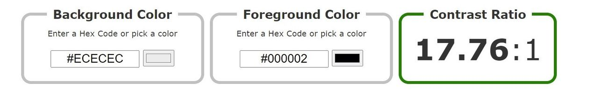

Color Contrast
We have kept our page simple, by using colors like black and white. The orange color that we have assigned to our nav bar, is inspired by the Oslomet webpage. We wanted to create a sense of connection between this first-year “blog” and the official university website. We have also used this to highlight our nav bar, making it easier to access and more convenient for the user.
We decided to use a light background with dark text to make the information stand out and be easy to read. The contrast we have has a ratio of 17.76:1, which is way past the standard contrast ratio of 4.5:1 that all websites should have 
Navigation Bar

Another thing that we have put effort into is page structure content. We have very clearly labeled the different regions of the page on the navbar, in a logical and efficient way. “Home” “reflection essay” “Accessibility” and “Topical information” and “fun page” are our five regions, and each region has a very clear heading. We have done this to improve the navigation and orientation of the web page. We have furthermore also made the regions change the background color and text color when you hover over them with a mouse. This had been done to make it easier for the visitor to find the information it needs.
Scroll to the top
We have also created a “scroll to the top” button. This returns you to the top of the page when you have scrolled all the way down. The user can get back to the point of where they started, and also back to our five regions; if they wish to find some other information
Tabindex
Tabindex is a global attribute that allows HTML elements to receive focus. This is also something we have used to make the information on our page more accessible. This makes it easier to browse the page as you can navigate to a different element by pressing on the “tab” key on your keyboard. When using this it is very important to keep in mind to have a logical navigation flow. We have therefore started with the navigation bar, it will flow through all of the regions before scrolling down on the page. This is also why we have made a lot of subheadings within our texts, so it will be easier to navigate with the tab key, but also because it makes the information easier to find. The main reason why we used the tabindex, was to make the site more user-friendly for people that are visually impaired.